徒步導覽是步行首爾的好選項
halafish（待還原）:
早上十點的導覽，對獨自自由行的人有個好處：不會睡太晚。導覽完，還能根據所在的位置繼續走，一點都不用擔心沒有規劃！！
這天從惠化、大學路出發，本來以為只是沿著街道聽故事，結果走進了醫院。
本文為舊旅行紀錄，參觀路線及開放空間保留當時經驗，現行安排請以官方公告為準。
先吃早餐，再把自己叫出門
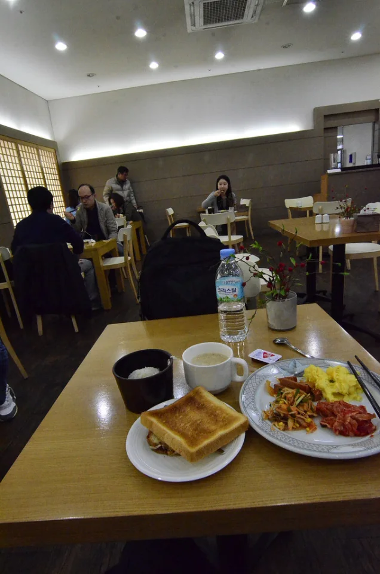
ALT一早下樓，當然是先把飯店提供的早餐券給用掉！
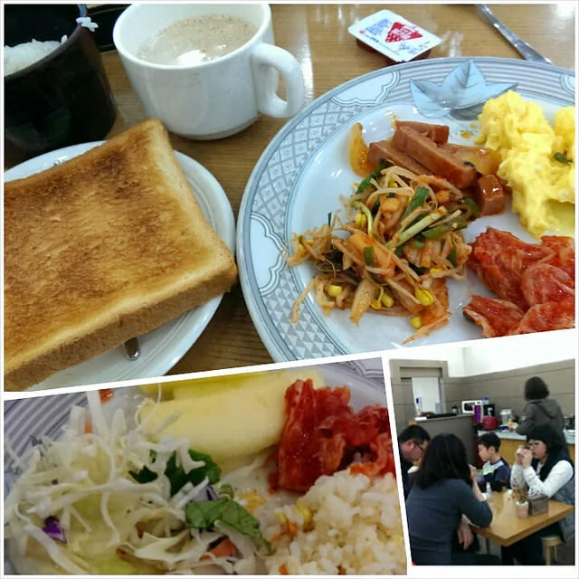
ALT看著菜色，還是覺得泡菜蘋果很妙！
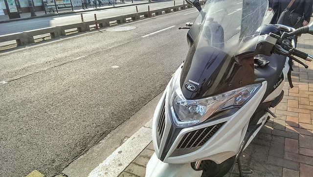
ALTＫＹＭＣＯ 光陽嘎！有沒有一點看見故鄉牌的感動？
後來發現街邊有阿珠罵賣的烤年糕，就是那種烤焦了，她會一直削掉的那一種。
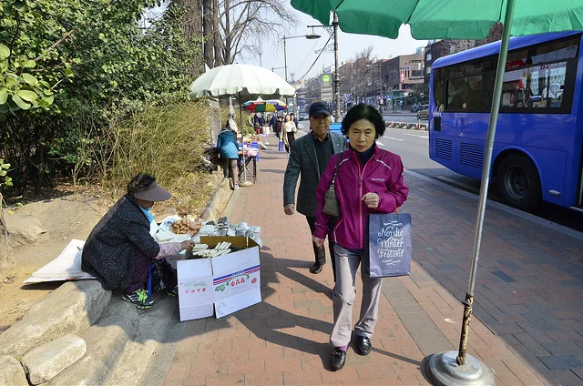
ALT本來以為是街邊導覽
緊接著就是導覽行程的開始。當天聽導覽員介紹，這條大學路路線有二十多個可講的景點，會視情況調整。
同團的都是臺灣人，大家對路線都感到神奇。原因在於，本來以為是街邊導覽。
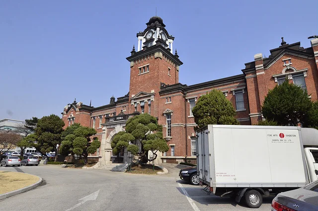
ALT殊不知，這次帶我們走進了醫院。
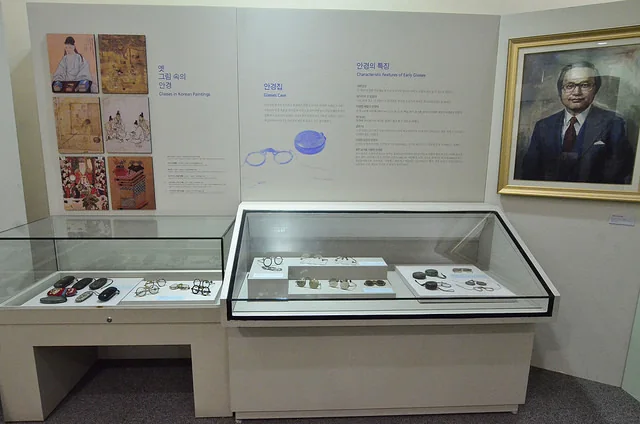
ALT（真的是「線戴」眼鏡～！）
一探首爾大學醫學相關建築的過去，從日本統治時期的大學歷史，講到後來韓國醫學的發展。然後到醫院的天臺花園，還能俯瞰附近的宮闕。
至於那時看見的是昌德宮還是昌慶宮，我當年的筆記就已經在猶豫，現在先不替記憶下定論。
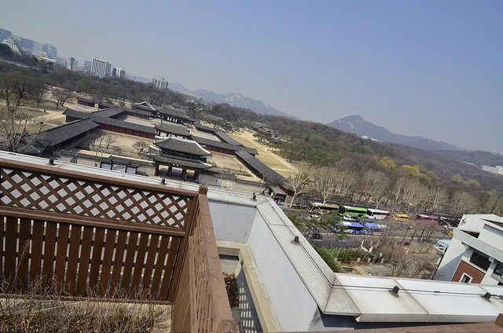
ALT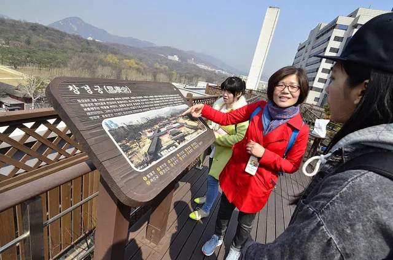
ALT然後再介紹一下歷史課——當然記不住。
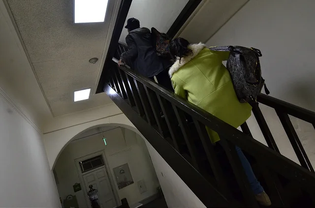
ALT有導覽員的好處，是當時有些地方能先經過詢問，再帶著我們上去。不然自己走到這裡，可能根本不會想到還可以繼續往裡看。
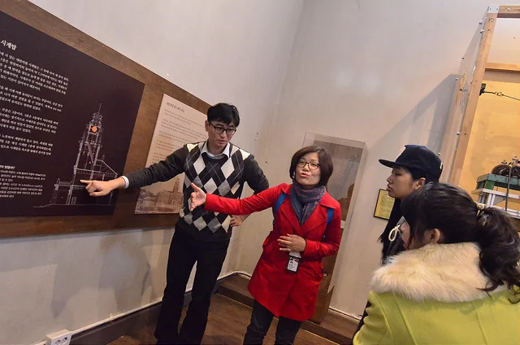
ALT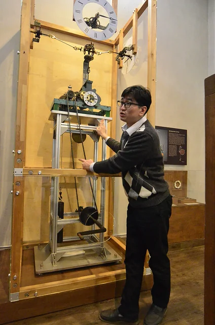
ALT像這個鐘區，就是導覽員詢問後，才帶著我們上去的地方。
大學路這次的導覽員很棒。他還帶了一名曾到臺灣讀到博士學位的韓國友人一起來，兩個人用國語都約略可以溝通。
不過後來發現，有些字詞還是由同團、在當地讀書的小妹妹來翻，會更貼切！
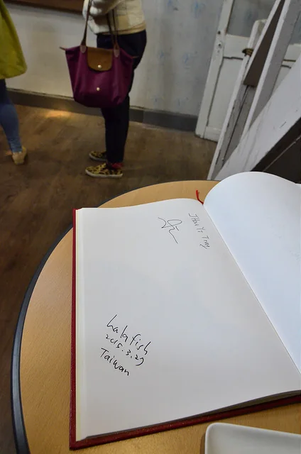
ALT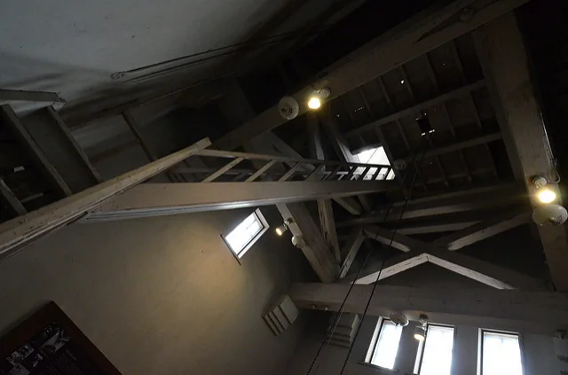
ALT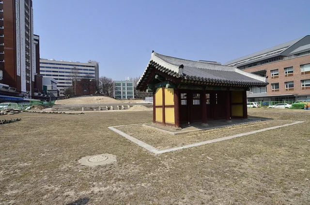
ALT這個地方似乎都拆光了，所以只剩下一個……
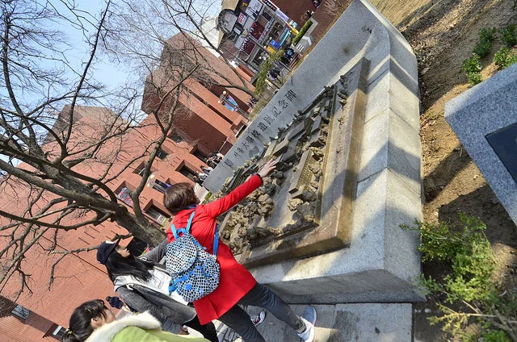
ALT首爾大學校遺址紀念碑。
緊接著，導覽員就帶我去看壁畫村。所以，也就沒有留到那位臺灣留學生的資料了。XD！
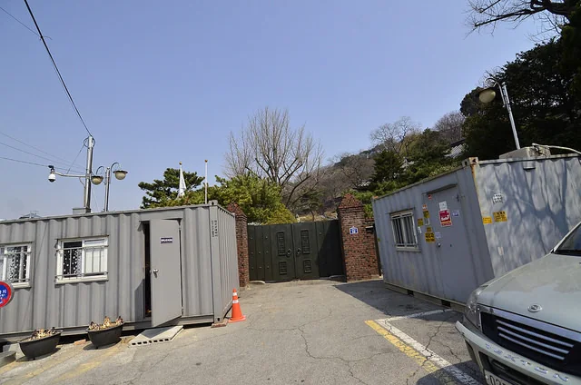
ALT途中經過一處，當時聽說是第一任總統的家。導覽時還聊到過去的收費參觀、管理與補助問題；確切地點與現在是否開放，這裡先不當作參觀資訊。
倒是很喜歡當時看到的那四個字：「敬天愛人」。
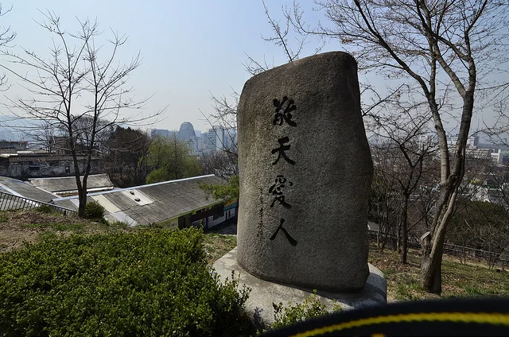
ALT想參加大學路導覽，從這裡查
官方「大學路建築路線」以惠化站 3 號出口為集合地點，標示導覽長度約 2 至 3 小時。本文當年的醫院天臺、鐘區等參觀經驗，不代表現在固定開放。
獨旅者也要留意：官方公告自 2026 年 9 月起，保證成團至少需要 2 人；單人預約會先等待確認。
實用資訊整理於 2026/10/23，出發前請再次確認。
這組散步記的下一篇：梨花壁畫村、巷弄午餐與咖啡店。
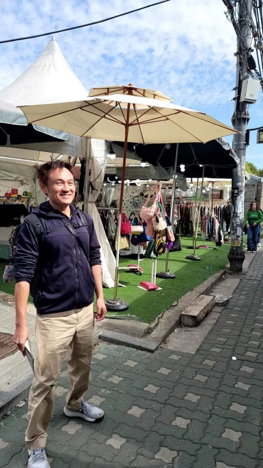
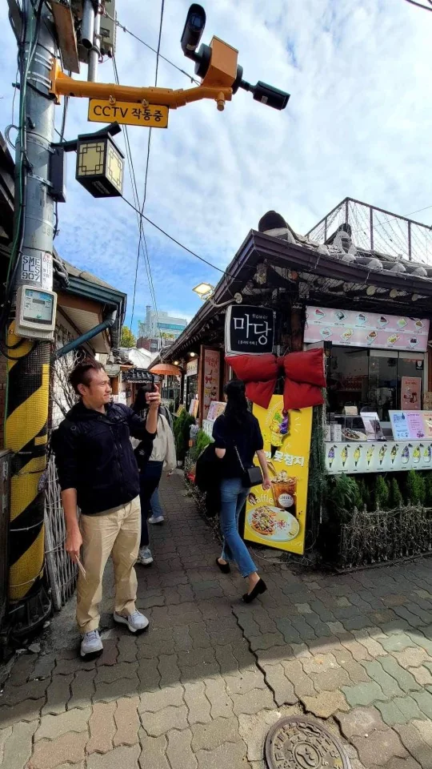
徒步導覽是步行首爾的好選項
大部份都是熱情且有問必答的長輩們
最後這兩次參加（2024、2025）
都遇到會幫你留更多側拍紀錄的媽媽們
不過要注意
現在起若只有單人報名的話 是可能不會成行的喔！